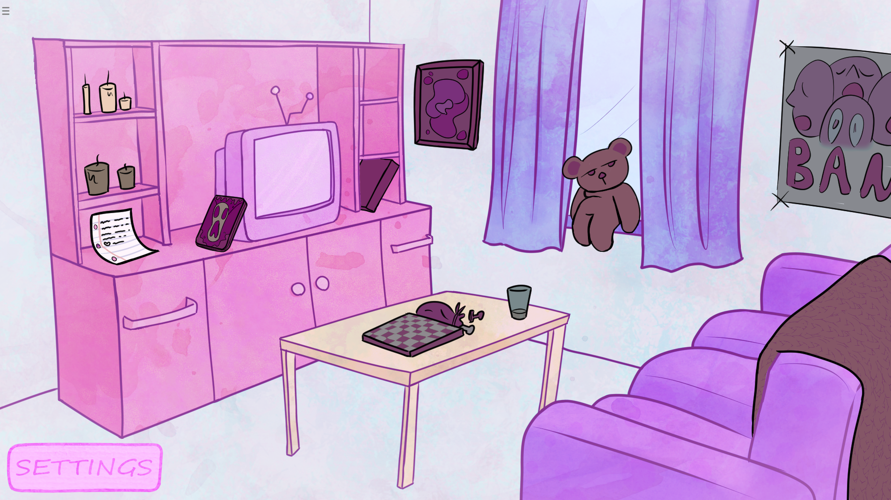
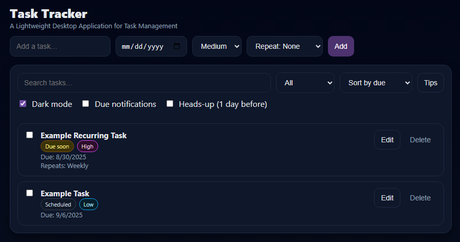

Guiding Light
Blind-accessible adventure RPG
Hi! I'm Taylor. As a Platform Support Specialist with a focus on media and live streaming, I specialize in providing expert support while troubleshooting complex technical issues to ensure seamless client experiences. I thrive in environments where creativity and technical know-how intersect, and I aim to make every support interaction effortless and efficient!
With a background in interdisciplinary studies and game development, I approach challenges from multiple perspectives, combining technical expertise with creative problem-solving. My experience spans roles in both platform support and project management, where I’ve honed my skills in collaborative, cross-disciplinary teams and dynamic problem-solving. Previously, as an Admissions Coordinator, I developed strong organizational and process optimization skills, overseeing applicant documentation and streamlining workflows to improve efficiency.
I'm always interested in freelance game development projects, particularly in a production capacity. I’m excited to apply my technical and creative expertise to new collaborations, while continuing to expand my skills in game development and project management!
Blind-accessible adventure RPG
Point-and-click riddle game
 Created for the Narrative-Driven Game Jam #12, I recruited an international team to create a polished, narrative-focused game with full voiceover and original music in 10 days. I facilitated team meetings, developed and communicated the project plan, and utilized Trello to track tasks. This submission placed 2nd Overall and 1st in Audio!Narrative-driven, turn-based RPG
 As producer on this project, I facilitated the iterative development of a turn-based RPG over 3 months. I managed tasks and the backlog using Jira, led sprint planning and retrospectives, and monitored team progress and project scope. Additionally, I assisted with editing the writing, co-managed a marketing campaign, and spearheaded community building across various platforms.
As producer on this project, I facilitated the iterative development of a turn-based RPG over 3 months. I managed tasks and the backlog using Jira, led sprint planning and retrospectives, and monitored team progress and project scope. Additionally, I assisted with editing the writing, co-managed a marketing campaign, and spearheaded community building across various platforms.
A lightweight task-tracking app
 I built this Task Tracker to fulfill my own need for a simple productivity tool. I designed and implemented the app using HTML, CSS, and JavaScript, and packaged it with Electron for desktop distribution. Core features include recurring tasks (daily, weekly, monthly), customizable due-date notifications, dark/light mode theming, and persistent local storage.Email: taylor.klvg@gmail.com
LinkedIn: linkedin.com/in/taylormmcelroy